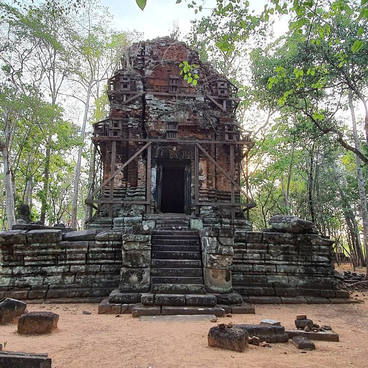

Koh Ker
The archaeological site of Koh Ker is a sacred urban ensemble of numerous temples and sanctuaries including sculptures, inscriptions, wall paintings, and archaeological remains. Constructed over a twenty-three-year period, it was one of two rival Khmer Empire capitals – the other being Angkor – and was the sole capital from 928 to 944 CE. Established by King Jayavarman IV, his sacred city was believed to be laid out on the basis of ancient Indian religious concepts of the universe. The new city demonstrated unconventional city planning, artistic expression and construction technology, especially the use of very large monolithic stone blocks.


Outstanding Universal Value Brief synthesis
Koh Ker: Archaeological Site of Ancient Lingapura or Chok Gargyar was a
capital of the Khmer Empire between 921 and 944 CE. Partially hidden in
a dense broad-leaf forest between the Dangrek and Kulen mountain ranges
on a gently sloping hill some eighty kilometres northeast of Angkor, the
archaeological site comprises numerous temples and sanctuaries with
associated sculptures, inscriptions, and wall paintings, archaeological
remains and hydraulic structures.
Established by King Jayavarman IV in 921 CE, Koh Ker was one of two
rival capitals of the Khmer Empire that co-existed between 921 and 928
CE – the other being Angkor – and the sole capital until 944 CE, after
which the Empire’s political centre moved back to Angkor. Constructed in
a single phase over a twenty-three-year period, the sacred city was
believed to be laid out on the basis of ancient Indian concepts of the
universe. Koh Ker demonstrated markedly unconventional city planning and
architectural features, which were primarily the result of the
combination of King Jayavarman IV’s grand political ambition and the two
outstanding innovations that helped to materialise this ambition: the
artistic expressions of the Koh Ker Style, and the construction
technology using very large monolithic stone blocks. Although
short-lived as a capital and thus acting only as an interlude in Khmer
history, these innovations had a profound and lasting influence on urban
construction and artistic expression in the region.
Criterion (ii): The archaeological site of Koh Ker
exhibits in an exceptional way the interchange of human values that
resulted in the Koh Ker Style, a sculptural expression featuring bold,
expressive imagery and a dynamic sense of movement that resulted from
the fusion of Indian religious and artistic symbolism with local design
concepts and artistic craftsmanship. The Koh Ker Style, though formed
within a short period of twenty-three years in the 10th century, had an
enduring influence on the artistic expression of the subsequent period
of the Khmer Empire and other Southeast Asian countries.
Criterion (iv): The archaeological site of Koh Ker is a
prototype of a new urban landscape featured by grand-scale buildings,
thanks to the use of colossal monolithic stone blocks for construction
and sculptures. It had inaugurated a centuries-long phase of stone
temple construction across the Khmer Empire and became a source of
inspiration for the great monuments of Angkor and Southeast Asia in
later centuries.
Integrity
All attributes necessary to express the Outstanding Universal Value of the property, including the temples and sanctuaries, archaeological remains and hydraulic structures, are included within the property. The layout and built environment of the entire ancient capital are evident. Many looted sculptures have been repatriated. Threats to the attributes are under control.
Authenticity
The link between the property's attributes and its Outstanding Universal Value is truthfully expressed, and the archaeological remains can be said to truthfully convey their meaning; there are no conjectural reconstructions. The absence of later modifications or reuse after its abandonment in the 15th century has left the property with a high level of authenticity in terms of its location and setting, forms and designs, and materials and substances, as demonstrated by the archaeological evidence. The geographical location of the ancient capital city, the layout of the original urban plan, and the archaeological remains of the temples, royal palace, hydraulic systems, sculptures, inscriptions, and wall painting are authentically preserved in situ. The property is the same size and is in almost the same condition as at the time of its documentation in the late 19th century.
Protection and management requirements
Koh Ker: Archaeological Site of Ancient Lingapura or Chok Gargyar is
protected by the Law on the Protection of Cultural Heritage (1996). The
Royal Decree on the Establishment of Koh Ker Temple Site,
NS/RKT/0504/070, of 2004, as amended in 2020, defines the boundaries of
the property, the buffer zone, and the satellite zone beyond the buffer
zone.
The National Authority for Preah Vihear (NAPV) is the dedicated
governmental authority that oversees policy formulation and
implementation for the protection and conservation of the property, and
for combating illegal destruction, alteration, excavation, alienation or
exportation of cultural objects at both Preah Vihear and Koh Ker. The
NAPV technical teams, together with the active participation of the
community, undertake activities for the conservation and promotion of
the property according to a Comprehensive Cultural Management Plan. The
International Coordinating Committee for Preah Vihear advises and
monitors all NAPV activities. Heritage Impact Assessment mechanisms have
been embedded in the current management system. Risk management for both
the natural environment and the cultural heritage is carried out by
staff with adequate equipment following established procedures. Specific
long-term expectations include building up staff capacity.